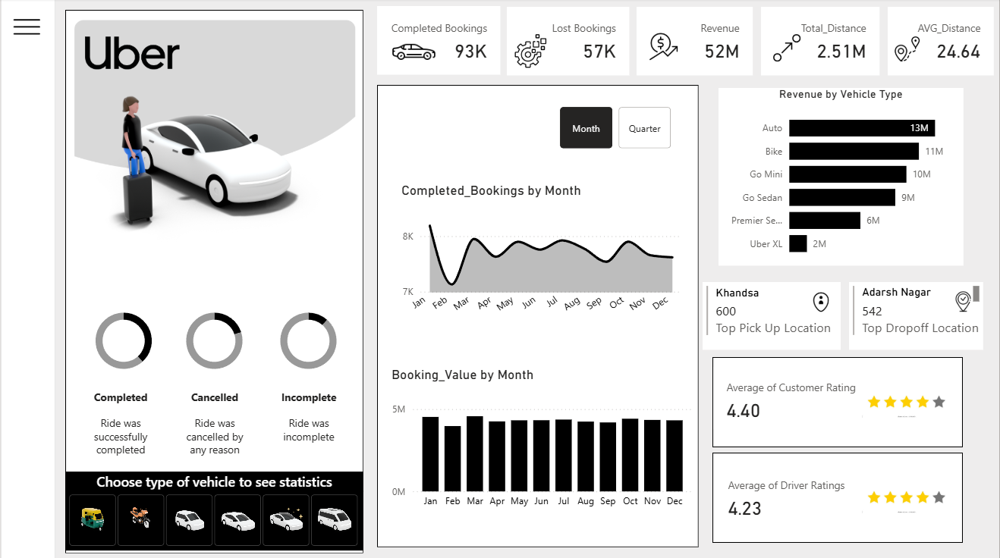

Uber Bookings Dashboard PowerBi
Introduction:
I designed an interactive Uber bookings dashboard in Power BI to monitor ride performance and understand how bookings, revenue, distance, and service quality vary across vehicles, locations, and time. The report highlights key metrics on a high-level overview page and then drills down into vehicle, customer, and location behavior to support decisions for operations and strategy.
Picture of Dashboard: 
Conclusions:
The dashboard highlights key booking, revenue, distance, and rating patterns across vehicles, riders, locations, and time.
- Tracked key KPIs including completed and lost bookings, revenue, total distance, and average distance on a high-level overview page.
- Analyzed monthly and quarterly trends in bookings and revenue, with filters to compare performance across different vehicle types.
- Identified top pickup and drop-off locations and visualized revenue by vehicle type to highlight the most profitable services.
- Used multi-page design, interactive filters, and a hide/show filter panel in Power BI to make complex booking data easy to explore.
These are some of the conclusions we can make from this data. Through this project, I learned more about how to utilize Power BI's interface to create interactive dashboards that can help us analyze data.